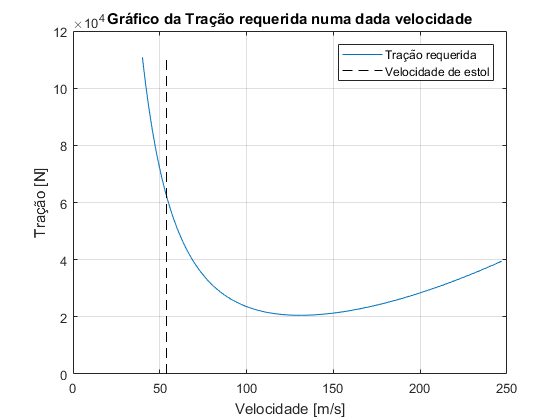
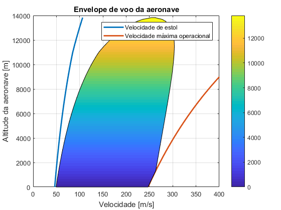
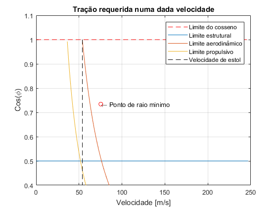

Lab 3 de MVO 31 - Voo Horizontal em Curva
Código para solução das equações do Laboratório 3 de MVO-31. No fim do código há algumas linhas comentadas que geram a versão publicada do código, para facilitar a correção. Para isso, basta copiar os comandos comentados na Command Window e apertar enter. Autores: Francisco Arthur Bonfim Azevedo e Julina Cristina Cortez Baraúna
Contents
Parãmetros da Aeronave
W = 33100*9.81;% kg s = 88;% m2 Tmax_s = 55600; %N T = @(delt,rho) delt*(rho./1.225).^0.6*Tmax_s; %W Cd0 = 0.015; k = 0.05; CD =@(CL) Cd0 + k*CL^2; CLmax = 2.8; CL =@(alfa) 0.02 + 0.12*alfa; CM =@(alfa,delta_profund) 0.24 - 0.18*alfa + 0.28*delta_profund; nmax = 2; VmaxOper = 247;% m/s qmaxOper = 0.5*1.225*VmaxOper^2; options = optimoptions('fsolve','Display','none');
item 1
phi = deg2rad(30); [~,~,~,rho] = atmosisa(3000); Vel = linspace(40,VmaxOper,1000); Vstall = sqrt(2*W/(rho*s*CLmax)); Treq = 0.5*rho*Vel.^2*s*Cd0+2*k*W^2./(rho*Vel.^2*s*cos(phi)^2); figure plot(Vel,Treq) hold on grid on plot(Vstall*ones(1,1000), linspace(0,max(Treq),1000),'--k') hold off xlabel('Velocidade [m/s]') ylabel('Tração [N]') title('Gráfico da Tração requerida numa dada velocidade'); legend('Tração requerida','Velocidade de estol'); %Resultados fprintf('Questão 1\n Figura 1\n\n');
Questão 1 Figura 1
item 2
%Caso da formula de tração minima VtracMin = sqrt((2*W/(rho*s))*sqrt(k/(Cd0*cos(phi)^2))); TracMinTeo = 2*W*sqrt(k*Cd0/(cos(phi)^2)); %Raio de curva RtracMin = VtracMin^2/(9.81*tan(phi)); %Velocidade angular OmegaTracMin = VtracMin/RtracMin; %Período necessário Period = 2*pi/OmegaTracMin; %Ângulo de ataque CLTracMin = W/(0.5*rho*VtracMin^2*s*cos(phi)); alfaTracMin = fsolve(@(alfa) CL(alfa) - CLTracMin,0.5,options); %Deflexão de profundor deflexProfundTracMin = fsolve(@(delta) CM(alfaTracMin,delta),0.5,options); %Posição de manete PosicManeteTracMin = fsolve(@(delta) T(delta,rho)-TracMinTeo,10^5,options); %Resultados fprintf('Questão 2\n Velocidade para tração mínima = %.2f m/s\n', VtracMin); fprintf('a)Raio de curva para tração mínima = %.2f m\n Velocidade angular para tração mínima = %.2f rad\n Período para tração mínima = %.2f s\n', RtracMin,OmegaTracMin,Period); fprintf('b)Tração mínima = %.2f N\n Ângulo de ataque para tração mínima = %.2f º\n Deflexão no profundor para tração mínima = %.2f °\n Posição da manete para tração mínima = %.2f\n\n', TracMinTeo, alfaTracMin,deflexProfundTracMin, PosicManeteTracMin);
Questão 2 Velocidade para tração mínima = 130.82 m/s a)Raio de curva para tração mínima = 3021.50 m Velocidade angular para tração mínima = 0.04 rad Período para tração mínima = 145.12 s b)Tração mínima = 20536.53 N Ângulo de ataque para tração mínima = 4.40 º Deflexão no profundor para tração mínima = 1.97 ° Posição da manete para tração mínima = 0.44
Item 3
poli = [0.5*rho*s*Cd0 0 (-(rho/1.225)^0.6*Tmax_s) 0 2*k*W^2/(rho*s*cos(phi)^2)]; VMaxMin = sort(roots(poli),'descend'); Vmin = VMaxMin(2,1); Vmax = VMaxMin(1,1); %Raio de curva Rvmax = Vmax^2/(9.81*tan(phi)); %Velocidade angular OmegaVmax = Vmax/Rvmax; %Período necessário PeriodVmax = 2*pi/OmegaVmax; %Ângulo de ataque CLVelMax = W/(0.5*rho*Vmax^2*s*cos(phi)); alfaVelMax = fsolve(@(alfa) CL(alfa) - CLVelMax,0.5,options); %Deflexão de profundor deflexProfundVelMax = fsolve(@(delta)CM(alfaVelMax,delta),0.5,options); %Resultados fprintf('Questão 3\n Velocidade máxima = %.2f m/s\n', Vmax); fprintf('a)Raio de curva para velocidade máxima = %.2f m\n Velocidade angular para velocidade máxima = %.2f rad\n Período para velocidade máxima = %.2f s\n', Rvmax,OmegaVmax,PeriodVmax); fprintf('b)Ângulo de ataque para velocidade máxima = %.2f º\n Deflexão no profundor para velocidade máxima = %.2f °\n\n', alfaVelMax, deflexProfundVelMax);
Questão 3 Velocidade máxima = 271.10 m/s a)Raio de curva para velocidade máxima = 12976.65 m Velocidade angular para velocidade máxima = 0.02 rad Período para velocidade máxima = 300.75 s b)Ângulo de ataque para velocidade máxima = 0.90 º Deflexão no profundor para velocidade máxima = -0.28 °
Item 4
Vstall = sqrt(2*W/(rho*s*CLmax)); if Vmin < Vstall Vmin = Vstall; end Vmin ; %Raio de curva Rvmin = Vmin^2/(9.81*tan(phi)); %Velocidade angular OmegaVmin = Vmin/Rvmin; %Período necessário PeriodVmin = 2*pi/OmegaVmin; %Ângulo de ataque CLVelMin = W/(0.5*rho*Vmin^2*s*cos(phi)); alfaVelMin = fsolve(@(alfa) CL(alfa) - CLVelMin,0.5,options); %Deflexão de profundor deflexProfundVelMin = fsolve(@(delta)CM(alfaVelMin,delta),0.5,options); %Resultados fprintf('Questão 4\n Velocidade mínima = %.2f m/s\n', Vmin); fprintf('a)Raio de curva para velocidade máxima = %.2f m\n Velocidade angular para velocidade máxima = %.2f rad\n Período para velocidade máxima = %.2f s\n', Rvmin,OmegaVmin,PeriodVmin); fprintf('b)Ângulo de ataque para velocidade máxima = %.2f °\n Deflexão no profundor para velocidade máxima = %.2f °\n\n', alfaVelMin, deflexProfundVelMin);
Questão 4 Velocidade mínima = 63.12 m/s a)Raio de curva para velocidade máxima = 703.53 m Velocidade angular para velocidade máxima = 0.09 rad Período para velocidade máxima = 70.03 s b)Ângulo de ataque para velocidade máxima = 19.44 ° Deflexão no profundor para velocidade máxima = 11.64 °
Item 5
TetoVoo = @(rhoTeto) 2*W*sqrt(Cd0*k)/cos(phi) - T(1,rhoTeto); rhoTeto = fsolve(TetoVoo, 0.1,options); HtetoAux = 12000:.05:15000; [~,~,~,rhoTetoAux] = atmosisa(HtetoAux); rhoTetoAuxPosic = find(abs(rhoTetoAux - rhoTeto) < 10^-4); Hteto = HtetoAux(rhoTetoAuxPosic(1,1)); clear HtetoAux rhoTetoAux rhoTetoAuxPosic %Resultados fprintf('Questão 5\n Teto de voo = %.2f m\n\n', Hteto);
Questão 5 Teto de voo = 13826.90 m
Item 6
HEnvel = linspace(0,0.9999*Hteto,100); [~,~,~,rhoEnvel] = atmosisa(HEnvel); rhoEnvel = rhoEnvel'; PoliVreq = [0.5*rhoEnvel*s*Cd0, zeros(length(rhoEnvel),1), (- T(1,rhoEnvel)), zeros(length(rhoEnvel),1), 2*k*W^2./(rhoEnvel*s*cos(phi)^2)]; Vreq = zeros(length(rhoEnvel),1); Vreq2 = zeros(length(rhoEnvel),1); for i = 1:length(rhoEnvel) VreqAux = sort(roots(PoliVreq(i,:)),'descend'); VmaxO(i)=VmaxOper*sqrt(1.225/rhoEnvel(i)); Vreq(i) = VreqAux(1,1); if VmaxO(i)<Vreq(i) Vreq(i)=VmaxO(i); end Vreq2(i) = VreqAux(2,1); end HEnvel = [ HEnvel HEnvel(sort(1:1:length(HEnvel),'descend'))]; Vreq = [ (Vreq2)' (Vreq(sort(1:1:length(Vreq),'descend')))' ]; Vstall = sqrt(2*W./(rhoEnvel*s*CLmax)); color = HEnvel; figure plot(Vstall, HEnvel(1,1:100),'LineWidth',2) hold on plot(VmaxO, HEnvel(1,1:100), 'LineWidth',2) patch(Vreq,HEnvel,color) hold on colorbar xlabel('Velocidade [m/s]') ylabel('Altitude da aeronave [m]') title('Envelope de voo da aeronave') legend('Velocidade de estol','Velocidade máxima operacional') xlim([0 400]) grid on hold off %Resultados fprintf('Questão 6\n Figura 2\n\n');
Questão 6 Figura 2
Item 7
Vel = linspace(0,VmaxOper,1000); [~,~,~,rho] = atmosisa(3000); %limite do cosseno: cosMax = 1*ones(1,length(Vel)); %limite de velocidade: Vstall = sqrt(2*W/(rho*s*CLmax))*ones(1,length(Vel)); %limite estrutural: cosPhiMaxEstrutural = (1/nmax)*ones(1,length(Vel)); %limite aerodinâmico: cosPhiMaxAerodinamico = 2*W./(rho.*Vel.^2*s*CLmax).*(2*W./(rho.*Vel.^2*s*CLmax)<1); %a desigualdade limita a valor do cosseno entre 0 e 1 %limite propulsivo: cosPhiMaxPropulsivo = (2*k*W^2./(2*Vel.^2*s))./(-0.5*rho.*Vel.^2*s*Cd0 + T(1,rho)).*((2*k*W^2./(2*Vel.^2*s))./(-0.5*rho.*Vel.^2*s*Cd0 + T(1,rho))<1); %a desigualdade limita a valor do cosseno entre 0 e 1 m1 = min(find(cosPhiMaxEstrutural>0)); %Remove os zeros que existem repetidos no vetor m2 = min(find(cosPhiMaxAerodinamico>0)); m3 = min(find(cosPhiMaxPropulsivo>0)); %Varia ângulo de rolamento até limite estrutural (0 a pi/6) phiRmin=linspace(0,pi()/3,1000); for i=1:1000 poli2 = [0.5*rho*s*Cd0 0 (-(rho/1.225)^0.6*Tmax_s) 0 2*k*W^2/(rho*s*cos(phiRmin(i))^2)]; VMaxMinRmin = sort(roots(poli2),'descend'); VminRmin(i) = VMaxMinRmin(2,1); vetorR(i)= VminRmin(i)^2/(9.81*tan(phiRmin(i))); end %Encontra mínimo dos raios calculados Rmin=min(vetorR); indice=find(abs(vetorR - Rmin) <10^-4); VminRminReal=VminRmin(indice); phiRminReal=phiRmin(indice); figure plot(Vel,cosMax,'--r') hold on grid on plot(Vel(1,m1:end),cosPhiMaxEstrutural(1,m1:end)) plot(Vel(1,m2:end),cosPhiMaxAerodinamico(1,m2:end)) plot(Vel(1,m3:end),cosPhiMaxPropulsivo(1,m3:end)) plot(Vstall,linspace(0,1,length(Vstall)),'--k') text(VminRminReal,cos(phiRminReal),'\leftarrow Ponto de raio minimo') plot(VminRminReal,cos(phiRminReal),'or') hold off ylim([0.4 1.1]) xlabel('Velocidade [m/s]') ylabel('Cos(\phi)') title('Tração requerida numa dada velocidade'); legend('Limite do cosseno','Limite estrutural', 'Limite aerodinâmico', 'Limite propulsivo','Velocidade de estol'); %Resultados fprintf('Questão 7\n Figura 3 \n Raio de curva mínimo = %.2f m\n Dentre a limitação propulsiva, encontrou-se um intervalo para ângulo de rolamento de 0 a 60°, a partir disso, foram calculadas as velocidades mínimas para cada ângulo e, por fim, os raios correspondentes a cada par v/phi. Desse modo, estabelecendo-se o mínimo desse vetor, é possível descobrir o raio mínimo para a condição proposta.', Rmin);
Questão 7 Figura 3 Raio de curva mínimo = 625.52 m Dentre a limitação propulsiva, encontrou-se um intervalo para ângulo de rolamento de 0 a 60°, a partir disso, foram calculadas as velocidades mínimas para cada ângulo e, por fim, os raios correspondentes a cada par v/phi. Desse modo, estabelecendo-se o mínimo desse vetor, é possível descobrir o raio mínimo para a condição proposta.
Gera a versão publicada em html do código
publish('Lab3atualizado.m');
web('html/Lab3atualizado.html');